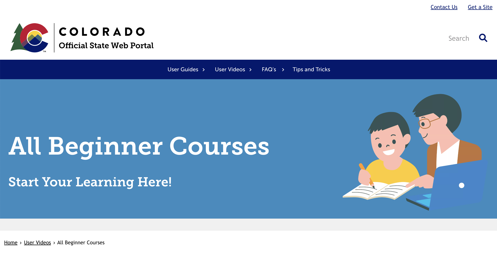

I spent a little over 4 years helping local and state Colorado government entitites create their websites on the Colorado.gov CMS platform. A large part of my role was to provide training to our various partners as I guided them
through successful completion of their website projects.
When we began major efforts to migrate all our existing customers off of Drupal 7 onto Drupal 8, I was tasked with creating brand new training pages and videos for our partners. Before I left my position as Associate Project Manager,
I took it upon myself to revamp and redesign the training pages to make it easier for our partners to find the information they needed to support their Colorado.gov websites.
While I was not able to complete my initiative before leaving my position for new opportunities, I was able to nearly finish the "beginner" level set of courses. With some help from my fellow teammate, I redesigned, rewrote,
restructured, and, in some cases, re-recorded and edited new training videos for the introductory courses.
Linked to this page is the Beginner Courses landing page. Not only did I help structure and rebuild/redesign this page, I created the content for and built all the training pages listed.
At the time of the project, these pages were built on Tyler Technologies NIC Division's own custom version of Drupal 8.
Visit Site